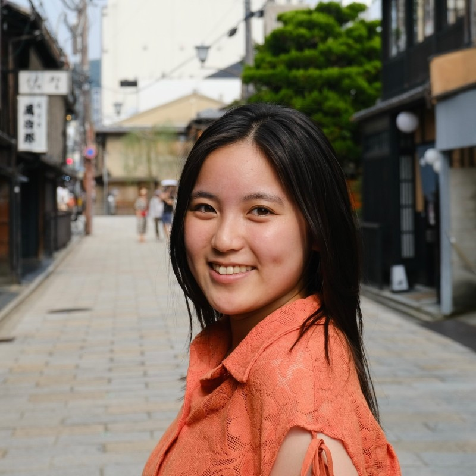
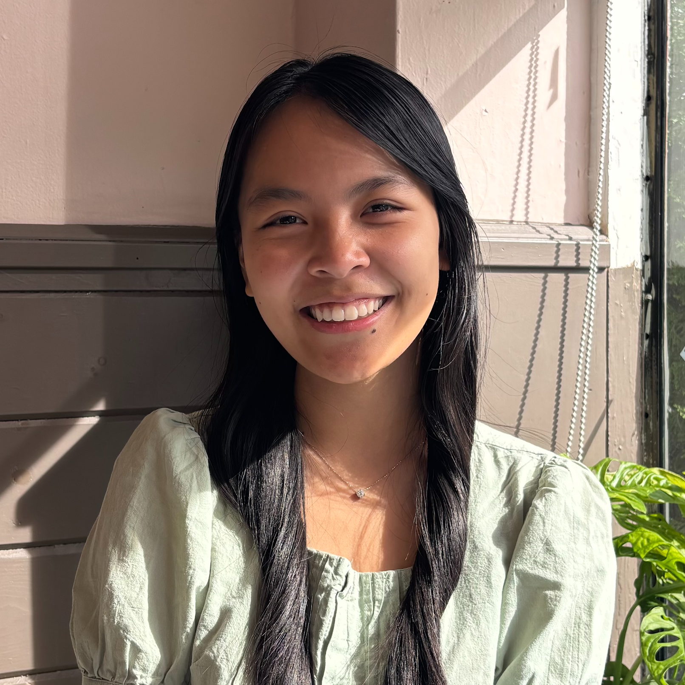
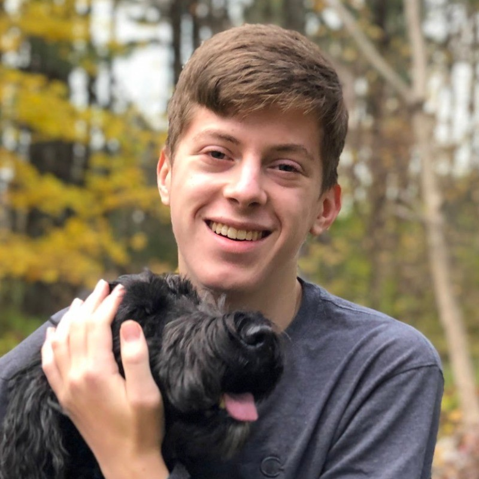

We investigate how meaning is represented across languages. Some of our current topics include: low-resource machine translation, model interpretability, downstream applications of semantic representations, and model benchmarking.
I am currently hiring Postdoctoral Fellows! To apply, please send (1) a cover letter including the names of three references, (2) a curriculum vitae (including full list of publications), and (3) a brief research statement describing the candidates’ interests and research (up to three pages) as PDF files to my email. I am also considering Ph.D. candidates for both Spring 2027 (priority deadline September 1, 2026) or Fall 2027 (priority deadline January 15, 2027)! If you are interested in doing a Ph.D. with me, you should apply to USF's graduate programs in Computer Science and Engineering or Data Science and AI.
(ACL 2026) "Lost in Translation, and Found: Detecting and Interpreting Translation Effects"
(IJCNLP-AACL 2025: Outstanding Paper Award!) "Generating Text from Uniform Meaning Representation"

Jiyuan Ji
Undergraduate Research Assistant (2025-)
Amherst College'28
NLP and AI Safety
Weixin Lin
Undergraduate Research Assistant (2026- )
Amherst College'28
NLP and Human-Robot Interaction
Andrew Tremante
Collaborating Research Assistant (2026- )
Data Scientist at IBM
Text-to-SQL and NLP
 
Anna (Ania) Serbina
Undergraduate Research Assistant (2024-2025)
Now: Ph.D. Computer Science, USC Information Sciences Institute
Reihaneh Iranmanesh
Undergraduate Research Assistant (2024)
Now: Ph.D. Computer Science, Georgetown University
Emma Markle
Undergraduate Research Assistant (2024-2026)
Now: Ph.D. Computer Science, Northeastern University
Javier Gutierrez Bach
Undergraduate Research Assistant (2025)
Now: M.S. Computer Science, New York University
Bianca Delgado
Undergraduate Research Assistant (2025)
Now: B.A. Computer Science and Mathematics, Amherst College
Thu Hoang
Undergraduate Research Assistant (2025-2026)
Now: B.A. Computer Science and Mathematics, Amherst College
 Ellie Yang
Undergraduate Research Assistant (2025-2026)
Now: B.A. Law, Jurisprudence, and Social Thought and Computer Science
Mina Yang
Undergraduate Research Assistant (2025-2026)
Now: B.S. Computer Science, Amherst College
Tairan (Ryan) Ji
Undergraduate Research Assistant (2025-2026)
Now: Product Engineer, Eudia (Legal AI)
Nathan Wolf
Undergraduate Research Assistant (2025-2026)
Now: M.Eng. Computer Science, Cornell Tech
Ellie Yang
Undergraduate Research Assistant (2025-2026)
Now: B.A. Law, Jurisprudence, and Social Thought and Computer Science
Mina Yang
Undergraduate Research Assistant (2025-2026)
Now: B.S. Computer Science, Amherst College
Tairan (Ryan) Ji
Undergraduate Research Assistant (2025-2026)
Now: Product Engineer, Eudia (Legal AI)
Nathan Wolf
Undergraduate Research Assistant (2025-2026)
Now: M.Eng. Computer Science, Cornell Tech